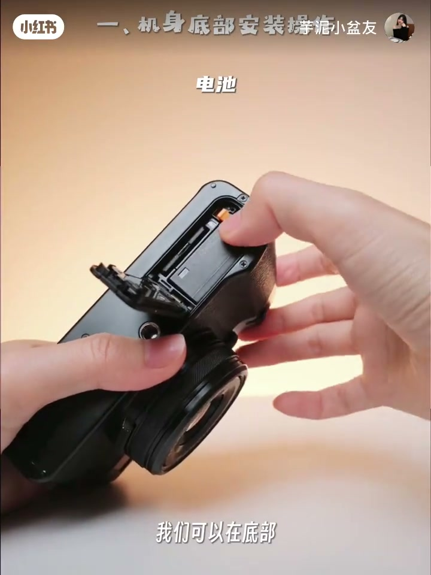
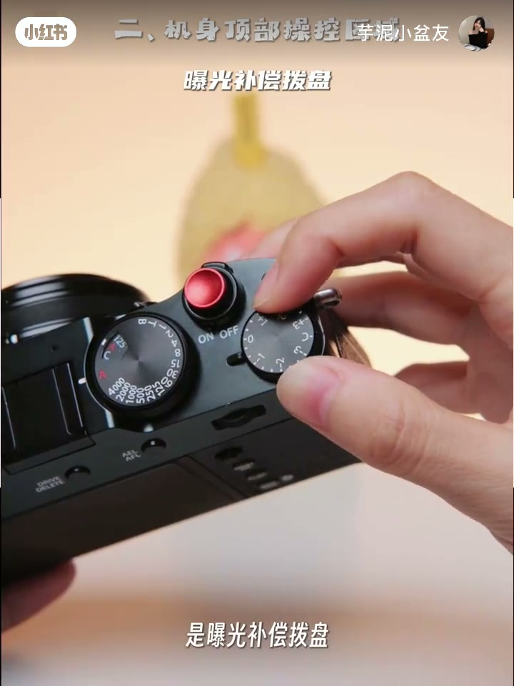
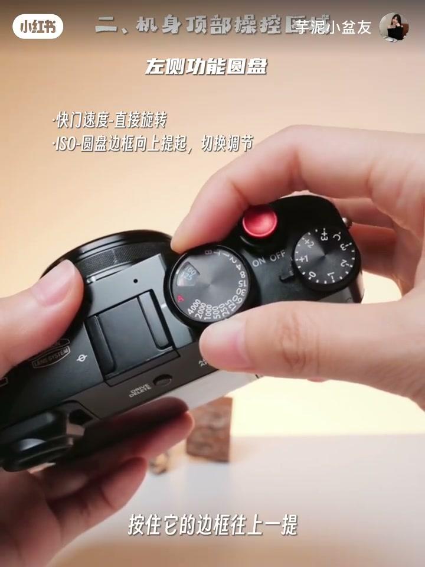
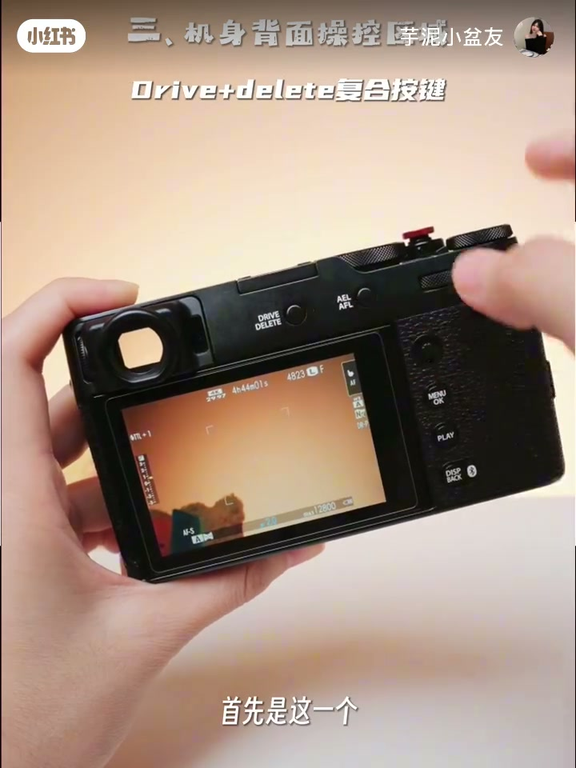
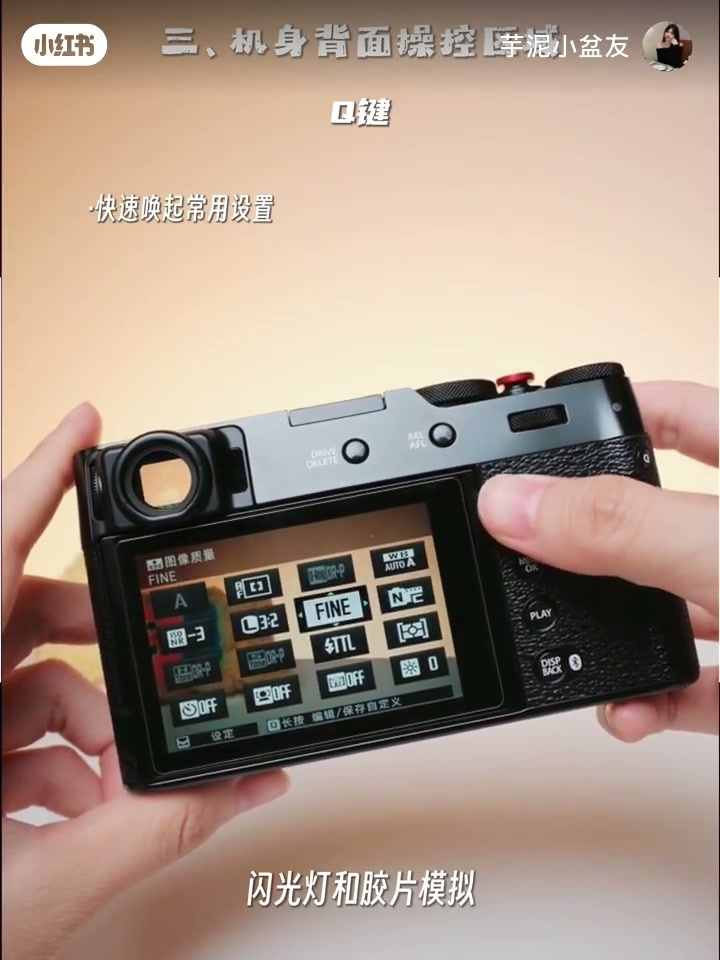
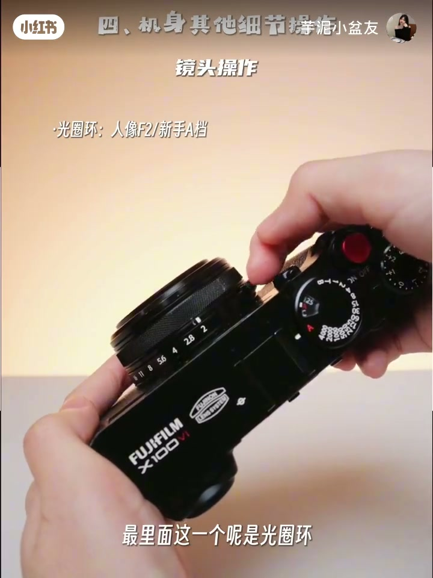
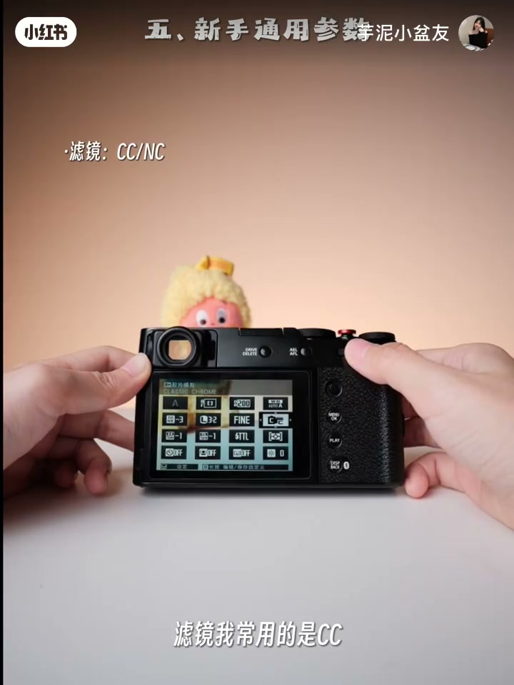
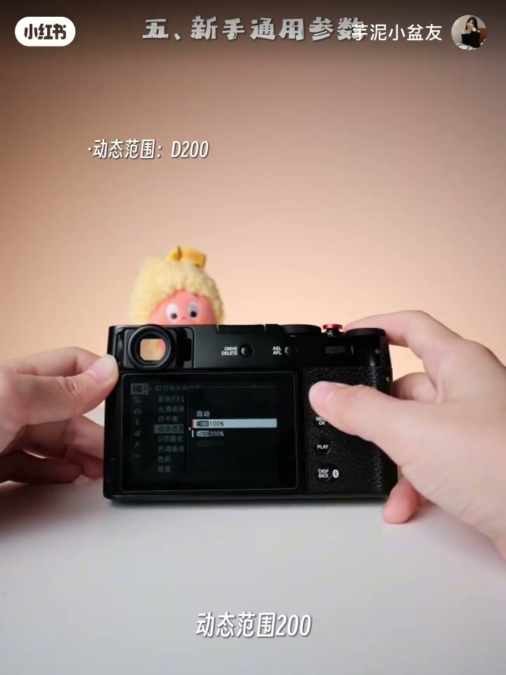

内容要点
UP 主「芋泥小盆友」用约三分半钟，把刚到手的富士 X100VI按「底部 → 顶部 → 背面 → 镜头/侧键 → 一套直出参数」走完一遍。口播强调不废话、跟着操作；Whisper 把机型听成「X160」、把 ISO 听成「so」，下文按画面铭牌与字幕校正。
知识结构
底部同仓装电池与内存卡；正面镜头盖掰开即可。
ON/OFF + 半按对焦全按快门；曝光补偿拨盘调明暗；左侧盘旋快门、上提调 ISO，新手可都放 A。
Drive/Delete 切模式，对焦杆移焦点，菜单与回放，Q 键快速唤起闪光灯/胶片模拟。
闪光灯 TTL 自动；侧面音频/充电/遥控；光圈环人像开大或 A；控制环可数码远摄；M/C/S 作者常用 C。
CC（次选 NC）+ 色彩效果强 + 高光/阴影 -1 + 蓝 FX 强 + 白优先或氛围优先 WB 偏移 R-1/B+1 + DR200 + 锐度 0 + 高 ISO 降噪 -3 + 色彩 +4。
先把拨盘放到自动/半自动能出片，再靠 Q 菜单改胶片模拟与色彩；参数是作者常用值，不是官方默认。
00:00–00:20底部：电池与内存卡
开场直接立目标：刚到手不会用也没关系，三分钟带你上手到出片。章节叠字进入「一、机身底部安装」——相机倒置，底部仓盖打开，橙色卡扣旁是电池；口播说明旁边同仓安装内存卡。接着转到机身正面，镜头盖「直接掰开」。

00:20–01:08顶部：开关、快门、曝光与 ISO 转盘
顶部区域按使用顺序拆开：开关机键 OFF 关机、ON 开机；上方快门半按对焦、全按拍照或录像；最边上是曝光补偿拨盘——在自动/半自动档位下，数值越大画面越亮，越小越暗。
左侧功能圆盘同时管快门与感光度：直接旋转调节快门；按住边框往上提，切换到 ISO。口播建议新手把快门和 ISO 都放到红色 A 档，先减少拨盘负担。


01:08–01:56背面：模式键、对焦杆、菜单与 Q
背面从左上开始：DRIVE/DELETE 直接按可切换拍照、视频等多种模式，查看照片时同一键可作删除。右侧小摇杆移动对焦点，转动其上的拨盘可改变对焦区域大小，同时兼作方向键与确定。
MENU 打开机内菜单；PLAY 回放。作者特别强调 Q 键：一按进入快速菜单，闪光灯和胶片模拟基本都能在这里找到。后拨轮可作手动快门或方向键。


01:56–02:50闪光灯、接口、光圈环与对焦档
正面可弹起闪光灯：在菜单或 Q 菜单闪光灯项里拨轮开关；选到 TTL 即自动闪光。侧面接口按口播顺序为：音频口、充电口、遥控接口（Whisper 误听为「刀青」；X100VI 无 HDMI）。
镜头最内圈是光圈环，转动调节光圈；人像建议开到最大（画面提示约 F2），也可放到 A。外圈控制环：手动对焦时用来对焦，自动对焦时转动可实现数码远摄。机身左侧对焦模式拨杆三档：画面刻度为 M（手动）/C（连续）/S（单次），作者说自己一般用 C。正面前拨轮是手动 ISO，作者称「基本用不上」。

02:50–03:28新手通用参数：CC/NC 配方
结尾给出一套「比较通用」的机内设定，并让观众赶紧截图保存。滤镜（胶片模拟）常用 CC（Classic Chrome），其次 NC（Classic Neg.）。其余按口播整理如下（作者个人常用值，非官方标准）：
作者口述通用参数
- 胶片模拟：CC，其次 NC
- 色彩效果：强；彩色 FX 蓝：强（口播「蓝色选择强」）
- 高光
-1；阴影-1 - 白平衡：白色优先或氛围优先；偏移
R-1 / B+1 - 动态范围
200；锐度0 - 高 ISO 降噪
-3；色彩+4
画面瞬时菜单可能与口播不完全同步（例如某一帧 Q 菜单仍显示其他数值），正文以口播清单为准。收尾欢迎评论区提问，并预告后续富士拍摄教程。


详细文字转录
以下为 Whisper 原始分段（101 段）。机型「X160」、感光度「so」、接口「刀青」、对焦「N档」等听写错误，请对照上文校正说明，勿把原文直接当操作手册。
-
刚到手的富士X160戴不会用
-
今天三分钟带你快速上手到出片
-
保姆级手把手教会你
-
快拿起你的相机跟我一起操作吧
-
首先刚拿到相机
-
我们可以在底部安装好电池
-
旁边这里是安装内存卡的
-
然后我们可以看一下机身的正面
-
这一个盖它是直接掰开就可以了
-
接着我们看一下机身的顶部操作区域
-
这一个是开关机键
-
off是关机
-
转到on就是开机
-
上面这一个是快门
-
轻轻半按是对焦
-
全按的话就是拍照或者录制视频
-
最边上这一个是曝光补偿拨盘
-
在自动和半自动的档位下
-
可以调整画面
-
曝光数值越大画面就会越亮
-
数值越小就会越暗
-
接着我们可以看一下左侧的转盘
-
它可以调节快门和感光度
-
直接旋转是调节的是快门
-
这里还有一个很有意思的设计
-
按住它的边框往上一提
-
可以调节它的so
-
也就是感光度
-
数值越大画面会越亮
-
但同时噪点也会增多
-
这里新手推荐快门和so直接自动
-
也就是这个A档就行了
-
接着我们看一下机身的背面操作区域
-
首先是这个直接按的话
-
可以切换拍照视频等多种拍摄模式
-
查看照片时按它可以是删除键
-
右边这一个小摇杆是对焦杆
-
它是可以调节对焦点的位置
-
然后转动上面这一个拨盘
-
它是可以调节对焦的区域大小
-
然后同时它还是一个方向键和确定按钮
-
这一个点开是菜单键
-
基本所有机内操作都可以在里面设置
-
下一个play回放键
-
它可以查看我们的照片
-
然后再看一下我们旁边这个Q键
-
按它是可以快速换取常用设置
-
闪光灯和胶片模拟基本都能在这里找到
-
很方便
-
上面这一个是后拨轮键
-
它是手动快门键
-
也可以是方向键
-
下一个我们来到机身的操作
-
可以看一下正面这一个是闪光灯
-
可以在菜单或者Q键闪光灯设置里
-
拨动它的拨轮打开或者关闭闪光灯
-
这一个TTL就是自动模式了
-
然后可以看一下机身接口这里
-
第一个是音频口
-
第二个是充电口
-
第三个是刀青接口
-
然后我们来到镜头区域
-
最里面这一个是光圈环
-
直接转动调节光圈
-
人像的话建议光圈开到最大
-
拓着A档
-
这一个是镜头控制环
-
手动对焦的模式下
-
它是可以进行对焦的
-
自动对焦的模式下
-
转动它可以实现数码远摄
-
对焦模式在左侧这里
-
有三个档位
-
N是手动档
-
C是连续对焦档
-
S是单次对焦
-
我一般用的是C档
-
机身的正面还有一个前拨轮键
-
是手动SO
-
这里基本用不上
-
最后分享一套比较通用的参数设置
-
滤镜我常用的是CC
-
其次是NC
-
色彩效果强
-
高光-1 阴影-1
-
蓝色选择强
-
白平衡白色或者氛围优先
-
然后调节成R-1
-
B1
-
动态范围200
-
锐度0
-
高SO降噪-3
-
色彩加4
-
赶紧截图保存
-
好啦
-
以上就是富士X160代
-
最常用的功能说明了
-
有问题可以在评论区问我哦
-
觉得有用的话也可以点个关注
-
后续还会分享富士的一些拍摄教程
-
那咱们下期见啦